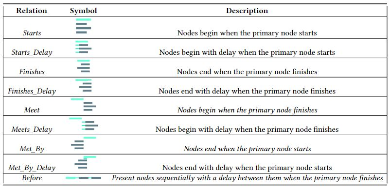

Tutorial - Relacionamentos em um projeto MultiSEL
Os relacionamentos no AMUSE VR são responsáveis realizar uma interação entre uma mídia e uma cena ou entre uma mídia e outra mídia/ES. Além disso, podem ser usado para o início ou encerramento da exibição de uma mídias/ES/cena.
A imagem abaixo mostra um exemplo completo de uma cena com relacionamentos.

Relacionamentos
Como dito anteriormente, os relacionamentos tem como objetivo realizar ações entre cenas/mídias/ES. Em MultiSEL os relacionamentos podem se comportar segundo os tipos da figura abaixo.
No MultiSEL para o AMUSE VR, para descrever uma relação deve-se usar a tag relation (como visto na linha 57). Além desta tag, deve conter duas tags filhas, a primary e secondary (como visto nas linhas 58 e 59). Para melhor entendimento os relacinamento serão divididos em relacionamentos internos e externos a cena e descritos a seguir.
Relacionamentos internos de cada cena
A imagem abaixo mostra nas linhas 57 a 68, relacionamentos internos de uma cena.
Todas as cenas não vazias devem conter relacionamentos internamente, esses relacionamentos no AMUSE VR realizarão ações como exibir ou ocultar mídias/ES contidas na cena. A seguir os tipos de relacionamentos MultiSEL que podem ser usados no AMUSE VR:
- Para exibir uma mídia ou ES na apresentação – usa-se o atributo type="starts", como visto na linha de 61.
- Para retirar uma mídia ou ES na apresentação - usa-se o atributo type="finishes", como visto na linha de 65.
Como todos relacionamentos representam a interação entre dois objetos, é necessário especificar a mídia invocadora e a mídia invocada através de tags filhas primary e secondary. Para o AMUSE VR descreve-se como a seguir:
- primary - através do atributo componente, indica a origem da mídia ou ES que executa a ação, como pode ser visto na linha de 62.
- secondary - através do atributo componente, indica o alvo da mídia ou ES que sofrerá a ação, como pode ser visto na linha de 63.
Como exemplo, se usarmos o relacionamento das linhas 65 a 68 na apresentação abaixo, a imagem do carnaval deixará de ser exibida na apresentação.
Relacionamentos externos às cenas
A imagem abaixo mostra nas linhas 71 a 78, relacionamentos externos às cenas.

Em projetos MultiSEL para o AMUSE VR, comandos interativos como cliques em mídias como imagens, textos e botões dependendo do relacionamento, podem resultar em transições de cenas. Para isso, é necessário que o relacionamento fique localizado fora de todas as cenas, mas ainda ainda assim, dentro da tag body, isto é necessário para o relacionamento ter acesso a todas as cenas.
Para criar relacionamento interativos entre cenas em projetos para AMUSE VR, usa-se a tag relation com os atributos:
- type="onSelectionStarts" - para iniciar uma determinada cena ao selecionar/interagir com a mídia definida pela interface da sua tag primary, como visto nas linhas de 71 ou 75.
- keyCode="trigger" - determinar que a ação de início será executada por um botão de gatilho (trigger) do controle, como visto nas linhas de 71 ou 75.
Para este tipo de relacionamento as tags filhas devem conter a seguinte estrutura:
- Atributo component da Tag primary - indica a cena que possuí a mídia/ES que executará a ação, como visto nas linhas de 72 e 76.
- Atributo interface da Tag primary - indica a porta da mídia/ES na cena desejada, como visto nas linhas de 72 e 76.
- Atributo component da Tag secondary - indica a cena a ser iniciada após a ação de click, como visto nas linhas de 73 e 77